从单回合到全班次
官方将常见困难灵巧任务的传统管线概括为约 80% 单回合成功，但长时间运行会出现错误复合和不可恢复状态。DYNA-1 发布页给出 24 小时、850+ 条餐巾、99.4% 任务成功率、零人工干预和约 60% 人类速度的组合指标。99.4% 只属于该次公开 24 小时餐巾任务，不能外推为所有任务平均值。
对 DYNA Robotics 官方技术发布、演示证据和后续更新的中文深度解构。核心结论：公开重点不在某个已披露的网络模块，而在 Reward Model、连续流切分、子任务标注、异常恢复数据与持续部署闭环。
如果把机器人 VLA 只理解成“看到图像后输出动作”，就很难看出 DYNA-1 的公开价值。真实服务现场的困难不是一次把餐巾折好，而是在数百次循环中持续面对多抽、皱乱、角点遮挡、环境变化、动作偏差和恢复耗时。DYNA-1 的核心叙事，是把评估单位从“单回合成功”提高到“全天候持续运行”，并把部署过程中出现的异常转化为新的训练数据。
官方将常见困难灵巧任务的传统管线概括为约 80% 单回合成功，但长时间运行会出现错误复合和不可恢复状态。DYNA-1 发布页给出 24 小时、850+ 条餐巾、99.4% 任务成功率、零人工干预和约 60% 人类速度的组合指标。99.4% 只属于该次公开 24 小时餐巾任务，不能外推为所有任务平均值。
普通模仿学习更容易收集正常轨迹，而生产系统真正稀缺的信息是失败前兆、进度停滞、回退、坏状态和成功恢复。官方提出自主探索、有意错误恢复、高质量数据创建与筛选，说明“从异常中学习”是方法重点。
部署日志没有天然 episode 边界。官方称其方法能够自动切分 streaming data，并输出任务进度和子任务标签。这样，24 小时视频不再只是一个难以利用的长文件，而可以转成有语义边界的训练片段。
截至 2026 年 8 月 25 日，DYNA 官方 Research 索引把 DYNA-1 列为公司研究文章，而不是公开学术论文。原始页面没有 arXiv、GitHub、模型权重或技术 PDF 链接；定向 GitHub API 检索命中的仓库是第三方列表或公司资料。因此本报告严格区分四种证据。
| 项目 | 状态 | 处理原则 |
|---|---|---|
| 视觉编码器、语言骨干、动作头 | 未披露 | 只画 VLA 黑箱，不指定 Transformer、LLM 品牌或动作生成范式。 |
| 动作表示与控制频率 | 未披露 | 不声称关节角、末端位姿、action chunk、diffusion、flow 或自回归。 |
| Reward Model 结构与损失 | 未披露 | 只分析公开功能：进度估计、切分、子任务标注和数据筛选。 |
| 数据总量与算力 | 未披露 | 不从 24 小时评估反推训练规模，也不把后续版本倒灌。 |
| 在线更新方式 | 未明确 | 只写“数据回流、后续更新、再次部署”，不声称运行中实时改权重。 |
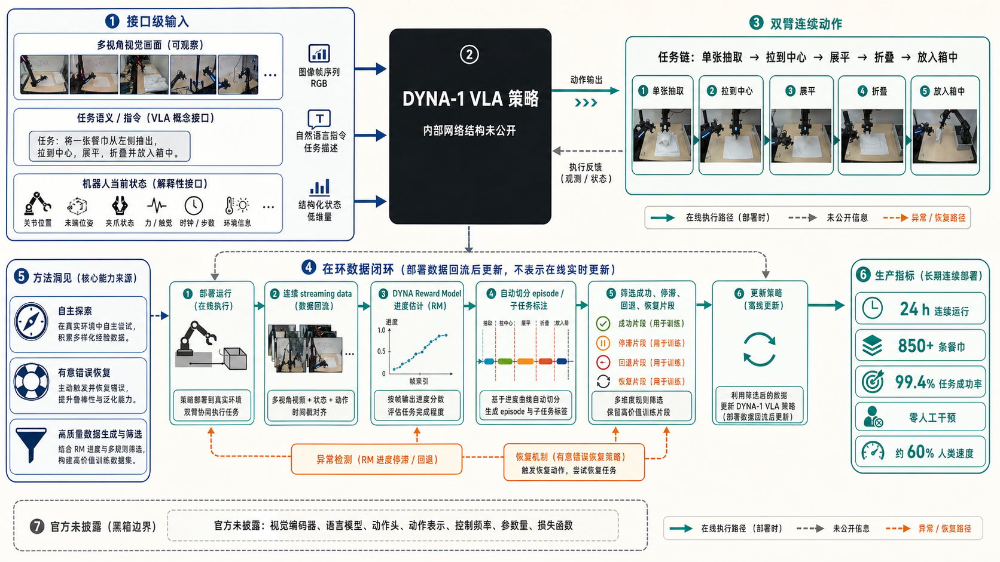
执行时，系统接收视觉与任务语义等信息，经 DYNA-1 VLA 策略产生连续的双臂动作，完成“单张抽取→拉到中心→展平→折叠→放入箱中”。公开材料没有说明每次输出几个动作、动作空间是什么，也没有说明语言条件是否动态变化，因此图中保留抽象接口。
学习路径从长期部署开始。机器人自然产生普通片段和稀有片段。普通片段告诉策略“多数时候如何完成”；稀有片段告诉系统“什么时候开始偏离、如何判断进度停滞、怎样从坏状态回来”。Reward Model 提供进度信号，连续流切分把长日志变成 episode 与子任务片段，筛选系统把高价值恢复经验送回策略更新。
专家示范分布通常集中在正常状态。机器人如果一次拖出两张餐巾，看到的重叠层、内折角和皱乱外观可能在专家数据中极少出现。只训练正常轨迹，相当于只教会“车道中心怎么开”，没有教会“压线以后如何回来”。部署闭环的意义，是主动收集策略自己遇到的状态，并把恢复成功的轨迹变成训练资产。
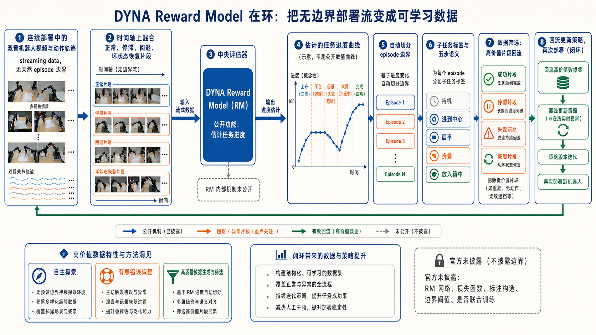
如果每条轨迹只有最后的成功或失败标签，模型很难知道失败发生在哪里。进度估计提供一种稠密语义坐标：餐巾是否从堆中取出、是否已经拉到中央、是否展平、是否完成折叠、是否放入箱中。它不必等同于真实百分比，关键是表达“正在前进、停住、倒退，还是恢复”。
上式只是解释性示意，不是官方损失函数。若进度长期上升，可能是正常推进；若长期不变，可能停滞；若下降，可能回退或进入坏状态；若下降后重新上升，则是极有价值的恢复样本。
对于持续部署，失败前兆帮助模型提前规避，停滞片段帮助识别无效循环，坏状态片段扩展状态覆盖，成功恢复片段直接教授“如何回来”。这解释了官方为什么把自主探索、有意错误恢复和高质量数据创建与筛选并列为方法洞见。
公开材料支持的是迭代闭环：部署产生数据，Reward Model 与切分系统组织数据，策略经过后续训练更新，再进入下一轮部署。官网没有说明机器人运行时是否直接更新参数。生产系统通常还需要离线验证、安全检查和版本发布，所以本报告不把 RM-in-the-loop 解读成无审查的在线学习。
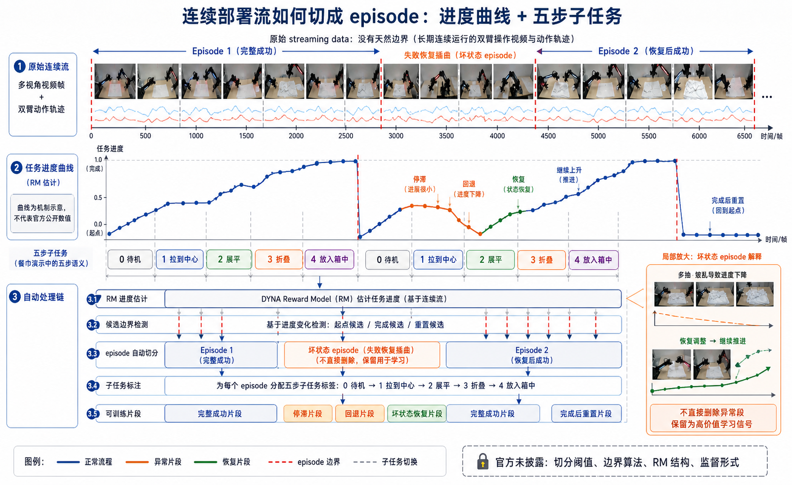
一个 episode 通常对应一次有语义完整的任务尝试：从初始状态开始，到完成、失败或重置结束。连续部署中，机器人完成一条餐巾后会立刻处理下一条，中间没有人按“结束”。若边界不清，样本可能跨越两个任务，前半是上一条的入箱，后半是下一条的抽取，条件和目标就会混乱。
官方演示中出现五步语义：0 待机；1 拉到中心；2 展平；3 折叠；4 放入箱中。进度完成后重置、子任务从入箱回到待机或拉到中心、长时间无进展以及回退后恢复，都是理解边界的有用线索。但切分算法、阈值和监督形式均未公开。
例如机器人抽出餐巾并开始展平，意外带出第二张；进度从展平阶段回退，随后策略分离两层并重新展平，最后折叠入箱。整理后可以得到正常前缀、故障触发、坏状态、恢复动作、恢复后完成五种片段。若只保留最终成功，最重要的中间因果链会消失。
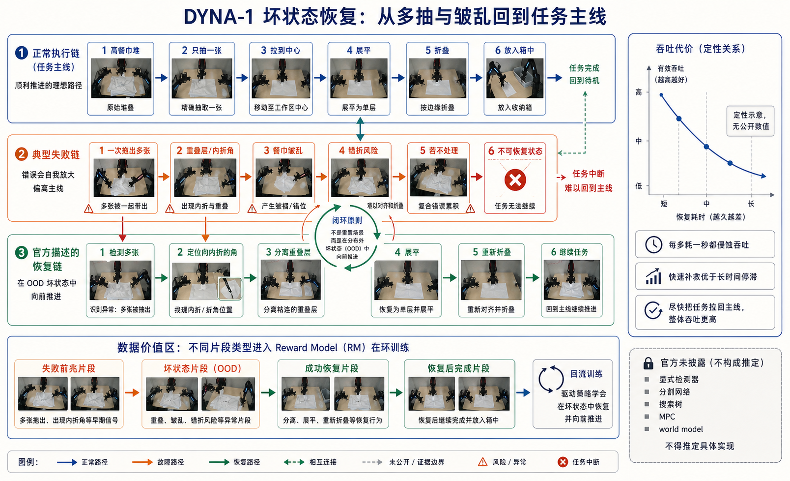
餐巾多抽不是孤立错误。两张布料重叠会改变摩擦、厚度、角点位置和可见轮廓；后续抓取若仍按单张假设执行，会产生新的折叠偏差。错误改变未来输入分布，未来动作又进一步放大错误，这就是复合错误。
一个教学模型可以写成：若单次成功概率为 q，连续 N 次都成功的概率约为 q 的 N 次方。即使 q=0.99，连续 500 次都无失败的概率也会很低。真实机器人不是独立伯努利过程，但这个例子说明：长时系统不能只降低单次失败率，还必须让失败可恢复。
官方公开的恢复顺序是：检测多张；定位向内折的角；分离并展平重叠层；重新折叠；继续任务。这里的关键不是把场景重置为干净初始状态，而是在当前分布外坏状态中继续推进。
恢复策略要同时回答三个问题：能否完成、完成得多好、恢复花了多久。机器人花十分钟解开一次皱乱，可能仍统计为成功，却无法达到餐厅吞吐。官方强调每多花一秒处理边缘情况都会侵蚀吞吐，说明生产评价不能只有成功率。
视频中看到先观察、再分离、再展平，并不能证明系统内部有显式检测器、分割网络、MPC、搜索树或 world model。端到端策略也可能产生分阶段行为。严谨说法是：系统表现出这些功能性行为，内部实现未知。
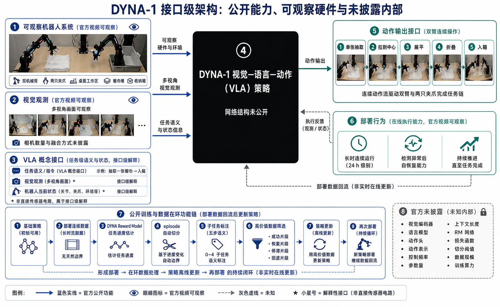
Vision-Language-Action 表示视觉、语言条件与动作相连接，但不同 VLA 可以使用完全不同的编码、融合和动作生成方式。有的离散化动作，有的回归连续控制；有的预测单步动作，有的预测动作块；有的使用 diffusion 或 flow，有的自回归。DYNA-1 页面只给出 VLA 身份与行为结果，具体选择属于未知。
许多机器人策略会使用关节状态、夹爪状态或历史动作，但 DYNA-1 发布页没有明确列出 proprioception 输入。为了说明控制闭环，图中保留“机器人当前状态”接口，同时标明它是解释性接口，不是官方确认的传感器列表。
本任务未发现 DYNA Robotics 发布 DYNA-1 官方代码仓库、模型权重或模型卡下载；GitHub 结果为第三方资料仓库。因此无法提供函数级、文件级或配置级论文—源码对应。任何声称“源码使用某动作头或某损失”的描述都不可靠。
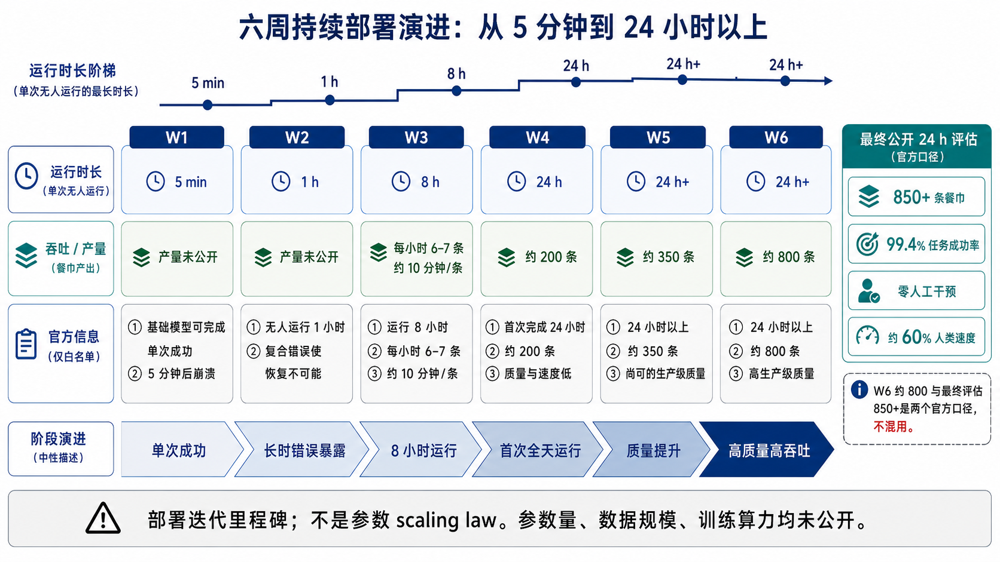
官方给出一条极有价值的部署时间线：W1 能单次成功但五分钟后崩溃；W2 无人运行一小时但复合错误无法恢复；W3 运行八小时，每小时六到七条，约十分钟一条；W4 首次完成 24 小时，约 200 条但质量和速度低；W5 24 小时以上、约 350 条、达到尚可生产质量；W6 24 小时以上、约 800 条、高生产级质量。
| 阶段 | 运行与产量 | 官方能力描述 |
|---|---|---|
| W1 | 5 分钟后崩溃；产量未公开 | 基础模型完成单次成功 |
| W2 | 无人运行 1 小时；产量未公开 | 复合错误使恢复不可能 |
| W3 | 8 小时；6–7 条/小时；约 10 分钟/条 | 开始长时运行 |
| W4 | 24 小时；约 200 条 | 质量与速度低 |
| W5 | 24 小时以上；约 350 条 | 尚可生产质量 |
| W6 | 24 小时以上；约 800 条 | 高生产级质量 |
99.4% 是公开 24 小时任务成功率；98% 是折叠质量达到 Grade 3 或以上；75% 是达到更严格 Grade 4 或 5 的比例。一次折叠可以算完成，却不一定达到高质量等级。官方还指出，初始折线不到三分之一英寸的精度差异，可能区分 Grade 5 与 Grade 3。
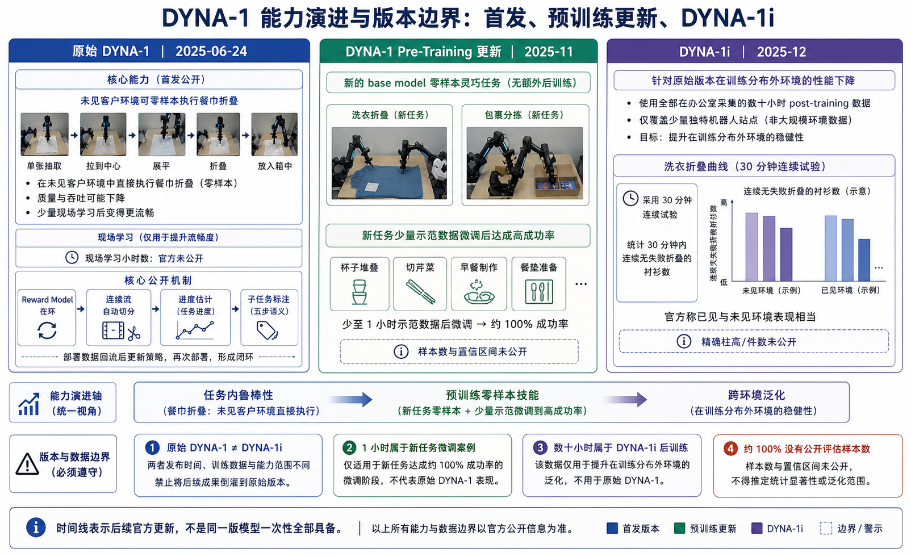
官方称原始 DYNA-1 能在未见客户环境中直接执行餐巾折叠，同时承认零样本泛化通常会降低质量和吞吐；少量现场训练后，系统会更流畅。原始版本没有公开现场训练小时数，不能与后续的一小时示范混用。
后续官方更新称新的 base model 在没有 post-training、任务特定微调或环境特定数据时，能完成洗衣折叠和包裹分拣。杯子堆叠、切芹菜、早餐制作、餐垫准备等新任务，少至一小时示范数据即可微调到约 100% 成功率。但评估次数、任务定义和置信区间未公开，因此它更适合被视为官方进展报告，而非可复现 benchmark。
DYNA-1i 针对原始 VLA 在训练分布外环境中的退化。官方称其使用全部在办公室采集的数十小时 post-training 数据，仅覆盖少量独特机器人站点；洗衣折叠评估采用 30 分钟连续试验，统计连续无失败折叠的衬衫数，并称已见与未见环境表现相当。精确柱高和件数未在正文中公开。
双臂从高堆中抽取一张餐巾，把它拉到工作台中央，展平向内折的角，完成折叠后放入收纳箱。每一步本身未必神秘，难点是所有步骤要连续、快速、质量稳定地重复数百次。
若夹爪一次带出两张，系统面对的就不是训练中常见的单层平面布料：轮廓重叠、角点遮挡、摩擦变化，原本正确的折叠动作可能变成错误动作。此时重要的不是立刻判失败，而是识别进度回退并进入恢复。
检测多张、定位内折角、分离层、重新展平并最终完成，这条轨迹包含最稀缺的因果信息：什么状态预示失败、哪些动作能够减少混乱、何时回到主线。对普通监督学习，它可能是不干净轨迹；对持续部署，它是关键训练资产。
即使餐巾放入箱中，折线偏差仍可能让成品只有 Grade 3 而非 Grade 5。进度模型回答走到哪一步，质量评价回答完成得多好，吞吐统计回答花了多久，生产系统需要三者共同约束。
| 模块 | 最低必要信息 | 当前公开状态 |
|---|---|---|
| 基础策略 | 输入模态、动作空间、历史窗口、网络、训练目标 | 未公开 |
| Reward Model | 标签构造、网络、排序或回归目标、校准 | 只公开功能 |
| 流切分 | 边界判定、重置识别、子任务体系、异常处理 | 只公开效果 |
| 数据闭环 | 筛选规则、重采样、示范与自主数据比例、版本流程 | 未公开 |
| 评估 | 成功定义、质量标注一致性、失败分类、置信区间 | 部分公开 |
不要只优化离线数据集上的平均性能。长时部署会产生状态分布漂移，恢复数据的稀缺性可能比正常数据规模更关键。Reward Model 不应只输出最终偏好，也可以成为进度估计、主动采样和数据组织的共享语义层。
评估流水线应同时记录任务完成、成品质量、恢复时间、人工干预、连续运行时长和吞吐。日志应保留失败前后上下文，不能只保存成功 clip。模型升级前必须做真实长时循环验证，因为短回合无法暴露复合错误。
VLA 的商业可用性不只取决于模型是否“聪明”，还取决于数据基础设施能否发现盲点、奖励模型能否给出可靠反馈、系统能否从异常中恢复，以及评估是否覆盖完整班次。DYNA-1 最值得学习的是这种系统视角。
sources/dyna1_official_text.txt、sources/pre_training_text.txt、sources/open_world_text.txt、evidence/video_frames/。evidence/evidence_fact_matrix.md；所有图片和正文依此区分事实、观察、推断与未知。把任务看成一条从初始状态走向目标状态的路径，最终成功标签只告诉我们终点是否到达，而进度估计给每一个中间状态附加了语义坐标。对于餐巾任务，机器人从待机到抽取、居中、展平、折叠、入箱，状态的视觉外观不断变化。若某次动作让餐巾更皱，进度可能停滞或回退；若恢复动作有效，进度重新上升。这样，数据处理系统就能区分“正在完成”“已经卡住”“开始变坏”和“从坏状态回来”，而不是把整段轨迹粗暴地压成成功或失败。
连续部署日志的价值密度并不均匀。一个小时的视频可能包含多个完整任务、任务之间的过渡、短暂遮挡、人工观察以及异常恢复。如果不切分，训练时很难知道某一帧属于哪个任务、哪个子任务、哪个结果。自动切分的真正工程价值，是把原始时间轴变成带语义索引的数据表：每段数据有起点、终点、任务进度、子任务、是否停滞、是否回退、是否恢复和最终结果。即使官方没有公开切分器的网络结构，这种数据契约本身已经解释了为什么长时部署可以反过来服务训练。
假设机器人完全不能恢复，那么一次多抽会把后续整条任务推向失败，长期成功率不仅取决于单步动作质量，还取决于错误是否具有吸收性。若机器人能检测多张、分离重叠层并重新展平，同样的初始错误就可能变成一个可修复事件。恢复能力因此不是一个孤立的技能，而是在改变系统的失败转移结构：错误不再必然通向终止，而可能转移到一个短暂的恢复子任务，随后重新回到主任务。官方强调恢复速度会影响吞吐，正是因为恢复后的系统仍然需要满足生产节拍。
为了帮助读者理解，而不是声称 DYNA-1 内部真的使用显式状态机，可以构造一个接口级例子：状态 A 为待机，状态 B 为拉到中心，状态 C 为展平，状态 D 为折叠，状态 E 为入箱。若从 C 进入“多抽”异常，就进入 R1 重叠层；若定位到内折角，就进入 R2 分离；完成展平后回到 C，再进入 D 和 E。Reward Model 的进度估计可被看作帮助判断状态是否前进的语义信号，流切分可被看作帮助识别一次任务何时开始和结束。真实实现可能完全不同，因此这段状态机只能作为解释性模型。
任务完成和产品合格不是同义词。餐巾被放入箱中，只能说明动作链走到了末端；折线是否准确、形状是否规整、是否满足餐厅摆台标准，还需要独立质量判断。官方给出 Grade 3 与 Grade 5 的差异可能小于三分之一英寸，并指出 98% 达到 Grade 3 或以上，但只有 75% 达到 Grade 4 或 5。这说明高成功率可能掩盖质量尾部问题。一个真正生产化的评价表至少要同时保存完成标记、质量等级、恢复耗时、人工干预和单位时间产量。
首发页面把 DYNA-1 称为 foundation model，但没有公开参数量、数据规模或架构。后续预训练更新提供了更具体的行为证据：没有 post-training、任务特定微调或环境特定数据时，base model 能展示洗衣折叠和包裹分拣；新的杯子堆叠、切芹菜、早餐制作和餐垫准备任务，少至一小时示范即可达到约 100% 的官方报告口径。学术上应把这些理解为迁移能力的公开案例，而不是完整的 scaling law 或可复现实验表。
原始 DYNA-1 页面强调生产级餐巾折叠、长时运行、恢复和初步未见客户环境部署。后续 DYNA-1i 页面则明确讨论原始 VLA 在训练分布外环境的性能下降，并以数十小时办公室 post-training 和 30 分钟连续洗衣折叠评估来展示跨环境改进。把两者合并成“首发版本已经同时解决长时可靠性、零样本基础技能和跨环境泛化”，会夸大首发能力，也会掩盖研究路线中真实存在的问题修正。
如果未来获得内部接口或尝试构造公开替代系统，评估应至少包含四种条件：已见环境与未见环境、正常操作与人为制造的坏状态、短回合与长时连续运行、任务完成与质量达标。每种条件都要记录连续无失败长度、恢复成功率、平均恢复时间、最终质量等级、人工干预次数和单位时间吞吐。这样才能区分“策略会做”“策略能恢复”“策略能长期做”和“策略能以生产质量长期做”。
自主探索不一定意味着机器人在完全没有约束的情况下随机试错。根据官方公开语境，更稳妥的理解是：策略在部署任务中遇到尚未覆盖的状态和动作后果，系统记录这些经验，再通过 Reward Model 估计进度和价值，筛选出值得学习的片段。探索的对象可以是抽取力度、布料角点处理、恢复顺序或异常状态下的动作组合；探索的结果不是直接写回权重，而是进入后续的数据整理和训练迭代。这样既保留了真实环境的长尾经验，也避免把未经验证的行为直接当成生产策略。
如果一条视频只是重复展示顺利折叠，它对长时鲁棒性的边际价值会很快下降。真正有信息量的数据往往具有明确的状态转移：错误从哪里开始，进度何时停住，哪一个动作让进度重新上升，恢复后质量是否仍然达标。官方把数据创建和筛选放在方法洞见中，说明数据质量至少包含任务语义、进度、异常类型和结果，而不是单纯的小时数。对于工程团队，这意味着数据平台需要保存失败上下文、恢复上下文和质量反馈，而不仅是最终成功视频。
餐巾折叠在同一工作站上连续运行，主要考验任务内的长时鲁棒性：抓取误差、皱乱、复合错误和恢复。换到未见客户环境，问题又增加了背景、光照、桌面布局、机器人站点和物体分布变化。原始 DYNA-1 页面已经展示未见客户环境零样本运行，但也承认质量和吞吐会下降；DYNA-1i 后续更新才把跨环境泛化作为专门改进目标。两类能力相关但不相同，不能用一项指标替代另一项。
24 小时、850+、99.4%、零干预和约 60% 人速构成一个公开演示的工程画像，但没有完整公开样本定义、置信区间、失败分类和评估协议。W1 到 W6 的约 200、约 350、约 800 也是部署里程碑，不是同一张严格控制变量的实验表。98% 达到 Grade 3 与 75% 达到 Grade 4 或 5，则是质量分布的另一组口径。读者应把这些数字用于理解系统目标和公开证据强度，而不是擅自拼成统一 benchmark。
学术分析并不要求对每一层网络都拥有源码。只要把可观察输入输出、公开功能、评估指标和未知边界分开，就可以讨论系统设计的因果逻辑：为什么需要进度信号，为什么连续流必须切分，为什么恢复片段比干净成功更有价值，为什么吞吐和质量要与成功率同时测量。这样的分析不能替代源码复现，但能帮助研究者提出可检验的替代实现与更严格的评估方案。
若要在开源机器人平台上复现 DYNA-1 的公开思想，可以构造四个可审计模块：第一，基础视觉动作策略；第二，独立的任务进度模型；第三，连续日志切分器；第四，基于成功、停滞、回退和恢复标签的数据筛选器。训练时保留正常轨迹与恢复轨迹，评估时分别报告单回合成功、连续无失败长度、恢复成功率、恢复时间、最终质量等级和吞吐。这样的实验不能宣称复现 DYNA-1 内部算法，却可以严格检验“奖励模型在环是否提升长时可靠性”这一公开机制假说。
从公开材料能确定的最小机制不是“RM 给出一个最终分数”，而是“RM 为连续轨迹提供随时间变化的任务进度语义”。在一个餐巾任务中，进度至少要能够区分待机、抽取、拉到中心、展平、折叠和入箱这些阶段；在异常发生时，还要能表现停滞、回退和恢复。这样，RM 的输出才可以同时服务三件事：第一，帮助系统判断一个任务片段是否已经完成；第二，帮助切分器寻找 episode 边界和子任务边界；第三，帮助数据筛选器发现值得回放的失败前兆与恢复片段。官方没有披露进度标签由人工、规则、偏好比较还是其他方式产生，所以这里只能解释功能契约，不能指定监督形式。
一个合理的接口级切分流程可以分为四步。第一步，在连续视频、动作和状态流上同步计算进度序列，并保留时间戳。第二步，寻找进度明显重置、任务完成、长时间停滞或环境重置等边界候选。第三步，在候选边界附近结合子任务语义检查，避免把上一条餐巾的入箱动作和下一条餐巾的抽取动作拼在一起。第四步，将每段数据赋予成功、停滞、回退、坏状态或成功恢复等可用于筛选的标签。这里的四步是帮助读者理解官方功能的解释性分解；官方没有公开固定阈值、算法类型或是否使用多模态输入。
恢复动作不能只截取“分离两张餐巾”的几秒钟。训练系统还需要知道恢复前发生了什么：是抽取阶段多拉出一张，还是展平阶段发现重叠；也需要知道恢复后是否真正回到主任务：重新展平后有没有成功折叠并入箱，质量是否达标。因而一个高价值恢复样本至少包含故障触发窗口、坏状态窗口、恢复动作窗口和恢复后验证窗口。这个上下文结构解释了为什么连续部署日志比孤立成功 clip 更有价值，也解释了为什么自动切分和进度估计必须协同工作。
如果只按最终成功排序，系统会优先留下“正常且容易”的轨迹，反而丢掉最需要学习的长尾状态。更合理的筛选目标是同时覆盖四类数据：正常推进片段用于保持基本技能，失败前兆用于提前规避，坏状态片段用于扩大状态覆盖，成功恢复片段用于学习回到主线。还可以按任务阶段分层，避免训练集被大量简单的待机或入箱帧淹没。官方没有公开采样权重、重放比例或数据混合策略，因此图中只画“高价值片段回流”，不虚构具体采样公式。
公开材料把自主探索、错误恢复、数据创建和持续改进连成闭环，但没有说部署中的每一次动作都直接更新策略。工程上更可信的流程是：运行版本产生日志；RM 和切分系统生成结构化片段；数据筛选保留高价值样本；训练得到候选策略；候选策略先做离线回放和短时安全检查，再进入长时连续部署；部署结果再反馈到下一轮。这个边界非常重要，因为它把“数据在环”与“无约束在线改权重”区分开，避免把官方没有说过的在线学习能力写进报告。
即使没有源码，公开机制仍然可以提出可检验预测。若 Reward Model 的进度估计确实有用，那么加入进度和子任务标注后，连续流切分质量应优于只按固定时间窗口切分；若恢复数据确实有用，那么加入成功恢复片段后，坏状态恢复成功率和连续无失败长度应提高；若恢复时间影响吞吐，那么应同时看到平均恢复耗时下降或单位时间产量提高；若跨环境泛化是独立问题，那么原始 DYNA-1 与 DYNA-1i 的已见/未见环境差距应呈现不同趋势。未来公开实验若能报告这些对照，就能把目前的官方机制叙事推进到可审计的学术证据。
本章在不改写前文 DYNA-1 内容的前提下，追加 DYNA-2 的学术风格精读。DYNA-2 的核心不是把机器人动作头做得更大，而是把训练目标从单纯的 Vision-Language-Action（VLA）扩展为 World-Action Model（WAM）：模型在训练时同时学习“未来会发生什么”与“应该怎样行动”，但部署时仍只需根据当前观测输出动作。因此，视频预测在这里主要承担表征学习和跨具身泛化的作用，而不是一个在线显式规划器。
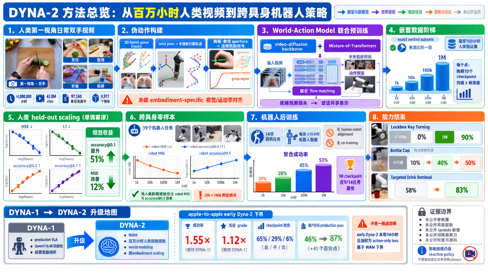
DYNA-2 的公开材料更像一篇持续更新的研究技术报告，而不是传统论文的单一 PDF。主报告标题为 Dyna-2: A 1-Million-Hour Scaling Law for World-Action Models，配套文章解释了百万小时训练所需的数据格式、缓存、分布式优化器和故障恢复机制。由于没有官方源码，不能像 Alpamayo-R1 那样给出函数级代码映射；本章采用“论文事实→机制解释→可检验边界”的方式，明确区分作者直接报告的结果和基于结构的推断。
阅读时应特别注意三层对象：第一层是训练机制，即 WAM 如何把未来视频监督接入动作表征；第二层是缩放证据，即数据小时数增加是否在 held-out 人类和机器人任务上呈现稳定规律；第三层是部署工程，即百万小时数据能否被稳定摄取、读取和训练。三层互相支持，但不能把基础设施吞吐提升直接当成策略成功率提升，也不能把视频生成蒸馏结果直接当成机器人泛化结果。
传统 VLA 的直接目标可以简化为：给定过去观测、语言指令和本体状态，预测未来动作块。它对“动作应该是什么”有直接监督，却未必被迫解释动作会怎样改变物体、接触和场景。DYNA-2 的 WAM 在训练期额外引入未来视频 latent，使同一共享表示同时承担两种预测任务：一条分支描述未来视觉变化，另一条分支描述动作轨迹。
这里的关键并不是部署时先生成视频、再把视频交给策略。官方明确的边界是：动作头 u_act 不读取预测中的未来视频 latent z_t；推理时也不生成或关注未来视频。因此，部署策略仍是 reactive policy。视频损失的价值发生在训练阶段：它迫使共享表征编码“物体状态—接触关系—几何变化—运动后果”等更一般的中间因素，动作头再从这些表征中读出适合当前机器人的动作。
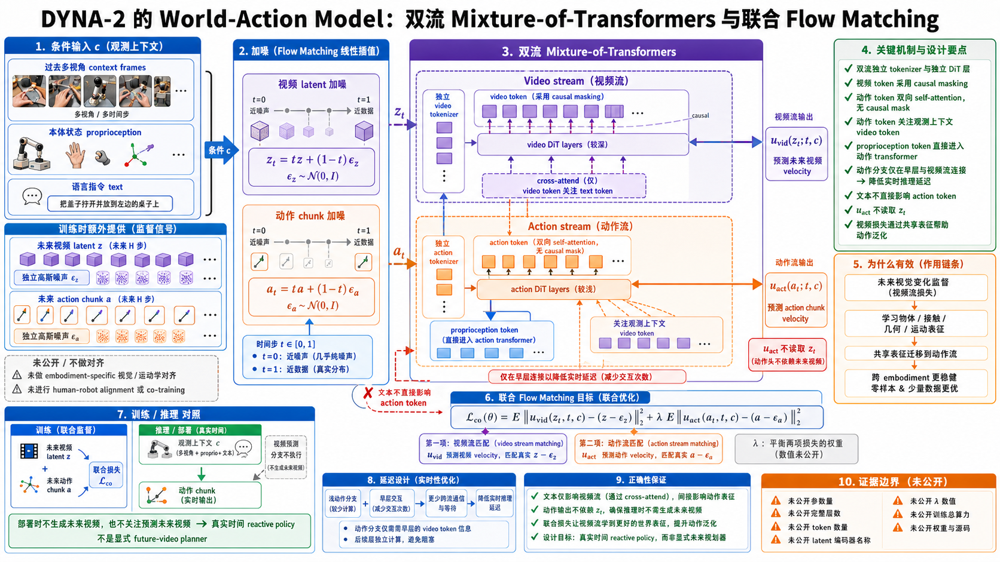
设条件为 c，包括过去帧、本体状态和语言指令；z 是未来视频 latent，a 是未来 action chunk。训练时分别采样独立高斯噪声 ε_z 和 ε_a，在时间参数 t∈[0,1] 上构造线性插值：
当 t=0 时，输入接近纯噪声；当 t=1 时，输入接近数据样本。模型学习从当前噪声状态指向数据状态的速度场。联合目标可写为：
第一项要求视频流恢复未来视觉变化，第二项要求动作流恢复未来动作块；λ 只是两项损失的权重，官方没有公开其数值。最容易误读的地方是：联合损失不等价于“动作预测必须读取生成的视频”。在公开结构中，u_act 不读取 z_t。所以更准确的因果叙述是：视频预测损失更新共享表示，动作损失把共享表示拉向可执行控制；两者在表示层协同，而不是在部署时串联成视频规划器。
具体例子。假设当前画面中有一个瓶盖，动作标签只告诉模型“手腕向右旋转并施加抓取”。如果只有动作损失，模型可能记住视觉纹理和动作共现；加入未来视频监督后，它还需要解释“瓶盖相对瓶身的旋转、手指接触区域和遮挡变化”。当机器人换成不同夹爪或灵巧手时，像素外观和关节空间会变，但物体—接触—运动后果的表征更容易迁移。这解释了为什么视频共训练对跨 embodiment 的收益可以显著高于同 embodiment 的人类动作拟合。
训练数据超过 1,000,000 小时，包含约 43.8M clips、97,160 条独特任务指令和 9,917 个不同物体。多数数据是头戴第一视角的日常双手操作，覆盖烹饪、整理、折叠和组装。官方用“约 170 年连续清醒经验”作类比，但这只是帮助理解规模，不是额外的训练统计量。
由于人类视频通常没有机器人控制器的 action label，DYNA-2 使用 3D hand-pose tracks 构造伪动作：wrist pose 转为末端执行器轨迹，thumb-index aperture 转为连续抓取信号。这个转换提供的是“手在哪里、如何接近、何时抓取”的粗粒度动作先验，而不是某一种机器人的完整关节控制。官方没有做 embodiment-specific 的视觉或运动学 gap 对齐，因此不能把它描述成已经完成了人—机器人动作空间映射。
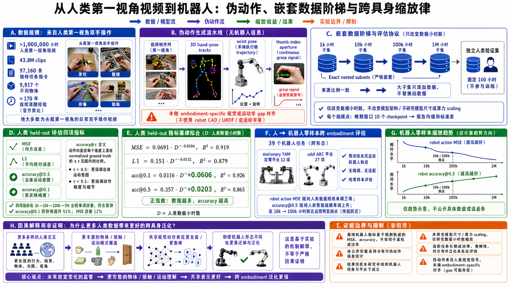
DYNA-2 使用 1k、10k、100k、1M 小时的 exact nested subsets，来源比例保持一致，大子集只添加数据；固定独立 100 小时人类验证集，每个规模点取晚期窗口的 10 个 checkpoint，报告均值和标准差。实验只改变数据小时数，不把模型尺寸 scaling 或算力 scaling 混在同一结论里。
指标包括 MSE、L1、accuracy@0.5 和 accuracy@0.1。accuracy@τ 表示动作各维度落在 normalized ground truth 的 ±τ 范围内的比例；τ=0.5 更接近总体运动意图，τ=0.1 对细节精度更敏感。四项指标都单调并符合幂律：accuracy@0.1 跨数据阶梯提升 51%，MSE 改善 12%。公开拟合式为：
这里 D 表示人类数据小时数。负指数意味着误差随数据增加而下降，正指数意味着准确率随数据增加而上升。指数绝对值较小并不等于收益没有意义：当数据跨越三个数量级时，小的幂律指数仍可累积出可观差异。与此同时，这些拟合只支持“在公开数据范围内的经验趋势”，不能外推成无限数据下的必然规律。
离线零样本机器人评估包含 39 项任务：内部 stationary YAM 双臂 12 项，xdof ABC 平台 27 项。相关机器人轨迹在预训练阶段没有出现，也没有微调或适配。随着纯人类数据规模增加，robot action MSE 单调下降，robot accuracy@0.5 单调上升；官方观察到 10k→100k 附近出现拐点。
这不是“人类手腕轨迹已经等价于机器人动作”的证据，而是共享视觉动作表征开始覆盖更多可迁移结构的证据。合理的机制解释是：多样人类交互覆盖更多物体、接触和运动模式；视频损失迫使模型编码这些模式的视觉后果；机器人动作头再结合本体状态把共享表征落到自身 embodiment。由于评估是离线 MSE 与 accuracy@0.5，不能直接改写成真机成功率。
作者比较三种方案：action-only 只有动作损失；joint 在同一批有动作标签数据上同时预测动作块和未来视频；video co-training 在 joint 基础上加入等量无动作标签视频，只用于视频预测。三者在相同训练步数上评估 39 项零样本机器人任务，动作标签规模为 5k、50k、100k 小时。
可靠结论有三层。第一，joint 在每个规模的 39/39 任务上均优于 action-only；action-only 随规模增加出现严重且不可预测的过拟合。第二，joint 的过拟合更少，但仅增加动作数据并不能让机器人泛化持续改善。第三，只有加入大量 video co-training 后，跨具身 robot generalization 才随规模继续改善；在小规模 5k 时它未必占优，规模越大优势越明显。
作者进一步固定动作数据，只扩展无动作视频：固定 50k action 时加入 0/1k/10k/50k video-only；固定 250k action 时加入 0/250k/750k video-only。机器人泛化随 video-only 数据单调改善。这组设计的价值在于把“动作标签更多”与“视觉世界覆盖更多”拆开，证明视频数据本身可以成为新的 scaling axis，而不是动作数据的被动替代品。
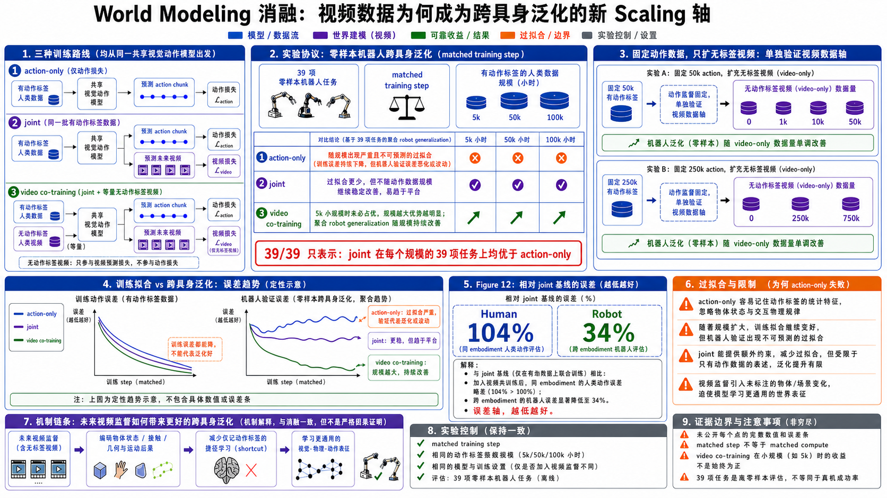
真机实验包含 14 项任务，每项最多 10 小时机器人数据。四个预训练尺度使用相同后训练步数，后训练只使用机器人数据，不做人—机器人 alignment 或 co-training。三类 embodiment 包括：11 项 6-DOF YAM 双臂加平行夹爪；2 项 YAM 加一对 WUJI-2 20-DOF 灵巧手；1 项早期半人形机器人。每项进行 10 次盲测，语言任务进行 12 次。
聚合归一化结果为 20%→28%→45%→53%，1M checkpoint 在 14 项中有 9 项最佳。Lockbox Key Turning 在不超过 100k 小时的尺度为 0%，到 1M 达到 90%；Bottle Cap Untwisting 只需约 10 分钟机器人示范，公开结果序列为 10%→40%→50%，官方摘录没有给出四个预训练尺度的完整逐点映射；Targeted Drink Retrieval 从 58% 提升到 83%。
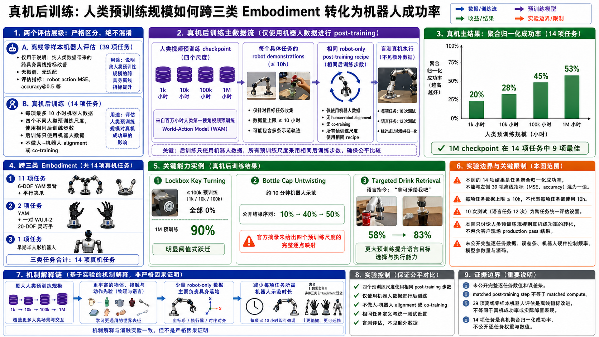
这是本章最需要精确解读的部分。DYNA-1 是 production VLA，类似 Mixture-of-Transformers 的动作架构，初始化自 Qwen3-VL-4B；DYNA-2 则把目标升级为 WAM，并引入未来视频监督、百万小时人类视频缩放和跨 embodiment 泛化。两者的差异不能简化成“模型更大所以更强”，因为最有说服力的对比来自一组控制条件严格的 early Dyna-2 实验。
在 apple-to-apple 条件下，early Dyna-2 WAM 与 DYNA-1 VLA 使用相同预训练/后训练数据、相同训练超参数；每种架构取 3 个预训练 checkpoint，比较 7 项后训练 benchmark。结果是成功率达到 DYNA-1 的 1.55×，质量 grade 达到 1.12×；固定 checkpoint step 与任务后，early Dyna-2 胜 65%，DYNA-1 胜 29%，平局 6%。
另一组客户现场实验必须单独理解：双方使用相同任务数据与后训练步数，且都没有见过客户现场数据；内部 production pass 都接近 100%，但客户现场零样本 production pass 从 DYNA-1 的 46% 提升到 DYNA-2 的 87%，增加 41 个百分点。这里的 production pass 是客户验收标准，不是一般任务成功率，不能与 1.55× 直接拼成一个综合分数。
质性改进也与“更通用的状态表征”一致：芹菜切得更薄、更均匀；改变或降低照明后仍保持精度；部分视觉输入丢失时仍能继续任务，这只能称为 sensor-loss robustness，不能说模型预测了不可见场景；当人不断把切好的食材放回板上时，DYNA-2 继续清空，直到板上为空，而不是执行固定次数后停止。
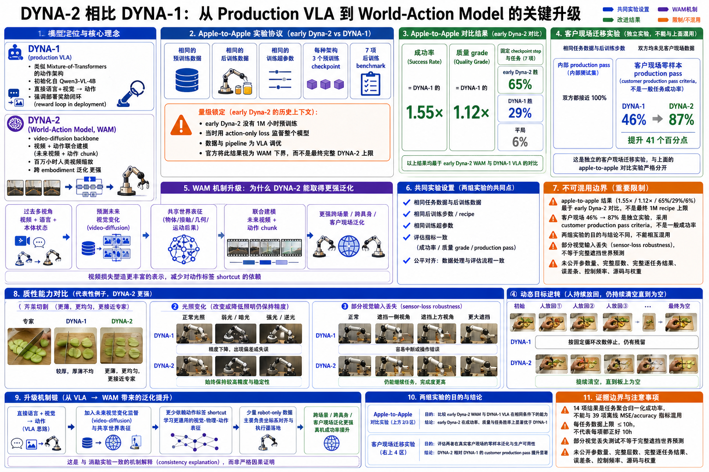
语言跟随 benchmark 共 36 个样本，覆盖 Jenga 指定推/拉和方向、从 5 个物体中指定目标装箱、红黄部件指定上下堆叠，以及餐巾的拿起、放下、拉、旋转、翻转、左右折、上下折和展平。评分为：完成指令结果得 1；尝试正确 primitive 但未完成得 0.5；动词、对象或方向错误得 0。
action-only early Dyna-2 得分 0.35，video co-train early Dyna-2 得分 0.67，完整 Dyna-2 得分 0.96。这个结果说明 world modeling 不只影响连续动作误差，也可能帮助模型把语言中的对象、动作和方向约束绑定到更稳定的场景表征上。但它仍是小规模行为 benchmark，不能外推为一般语言理解能力。
DYNA-2 还研究了视频生成器的 one-step student。单步回归容易把多个合理未来平均成模糊视频；直接 distribution matching 又可能在 teacher 未训练的离流形区域评估 score，高维视频中还容易出现梯度饱和、模糊或静态坍塌。
官方把它改写成 student 追逐移动 target 的控制问题：target 从可达的 q0 连续移动到数据分布 q1；只有在线读数表明 student 已追上当前 target 时，target 才前进。训练采用快速 student 更新和慢速 target 控制更新，并在比较前平滑两种分布。散度可以是 mode-seeking、adversarial 或混合形式，官方没有固定唯一形式。
单 H100、3 秒、3 视角视频的结果为：teacher 100 NFE 用时 10,203 ms；ours 1 NFE 用时 110 ms，约 93× 加速；student 的 FVD 为 121，motion 为真实视频的 75%，flicker 为 1.94。full teacher 的 FVD 为 80、motion 为 94%、flicker 为 2.69。由此可见 student 获得极低延迟，但 motion 仍弱于 full teacher；flicker 只是报告值，不能仅凭数值大小断言整体质量优劣。
百万小时缩放不是把硬盘和 GPU 数量简单放大。官方将 H5 每帧 JPEG 迁移到 MCAP，并结合调优压缩和 topic-group chunking，使存储缩小约 68%，sample read 约 2.9×。摄取吞吐从每周 14,000 episode-hours 提升到 440,000；time-to-first-batch 从约 48 小时降到 1 分钟以内；集群本地缓存约 2 GB/s/node，warm 多节点 GPU 利用率达到 98%。
拓扑感知 optimizer 在大规模约快 3×：节点内使用 NVLink 分片，节点间采用复制计算，按节点数量在 global sharding 与 node-local sharding 间选择，避免跨 fabric 广播。作为对照，全局 fully-sharded 的平均步耗时约为中位数的 2.6×，broadcast traffic 为 7.6×，且跨越 InfiniBand。Slurm preflight 会检查 GPU inventory、错误计数、kernel log、本地盘和容器；失败节点被 drain；worker 可以原位重启，整任务失败时由 Slurm requeue 并从最近 checkpoint 恢复；Ansible 单 playbook 使新集群可在数日内上线。
这部分的机制意义是可重复性：如果数据摄取、缓存和容错不稳定，所谓“百万小时 scaling law”可能只是偶然跑通的一次实验。基础设施把训练从一次性演示变成可重复的测量流程，但它本身不证明模型一定更聪明。
DYNA-1 更像“看到场景后输出动作”。DYNA-2 在训练期还要解释动作之后的视觉变化，因此更难只靠纹理和动作共现走捷径。
有动作标签的数据很贵，而且容易把模型推向特定 embodiment。无动作视频提供更宽的物体、接触和运动覆盖，成为第二条 scaling 轴。
当目标被人反复放回时，DYNA-2 继续根据板面状态工作，说明策略更依赖当前状态，而不是机械执行固定次数。
第一，源码、权重、参数量、完整层数、token 化细节、latent 编码器和关键超参数没有公开，无法做源码级复现。第二，人类伪动作来自手部轨迹和 aperture，仍存在手—机器人运动学 gap，官方没有报告完整误差统计或 embodiment-specific 对齐。第三，缩放实验主要改变数据小时数，没有同时研究模型尺寸和计算量，因此不能宣称完整 compute-optimal scaling law。第四，39 项是离线零样本机器人指标，14 项是真机后训练聚合结果，客户现场 46%→87% 又是 production pass criteria，三者必须分开。第五，one-step video student 以速度换取部分 motion/FVD 质量，且完整 target 控制细节未公开。
未来最值得验证的不是再画一张更复杂的结构图，而是补齐可审计的对照：伪动作误差与不同手—机映射的敏感性；固定模型和计算量下的视频小时 scaling；video co-training 对各 embodiment 的逐任务分布；world modeling 是否在遮挡、接触变化和长时恢复上分别带来收益；以及 one-step student 在真实部署闭环中是否满足质量阈值。以上问题也是当前公开材料的真实边界。
Epona（ICCV 2025，arXiv:2506.24113）的关键不在于把“自回归”和“扩散”简单叠加，而在于把两者分配到不同轴：时间轴用逐帧自回归维持因果性与任意长度，单帧连续空间用 Rectified Flow 保持视觉细节。历史理解由 MST 统一编码，未来轨迹与下一帧视觉分别由 TrajDiT、VisDiT 两个独立扩散头生成；Chain-of-Forward 与 temporal-aware DCAE 分别处理长期回灌误差和逐帧解码闪烁。
Kevin-thu/Epona69b24c55…给定历史前视观测 O1:T 与相邻车辆运动 at−1→t=(Δθ,Δx,Δy)，世界模型要学习未来视觉与未来动作。传统离散自回归方法把图像量化为大量 token，再逐 token 预测，时间成本随空间 token 数增长；整段视频扩散则一次生成固定长度窗口，长视频需要外部拼接且难以自然支持任意长度。Epona 的折中是：只把“下一帧”作为扩散目标，因此每一步仍保持连续 latent 的生成质量；视频长度则由外层自回归循环决定。
源码在 models/traj_dit.py:130 与 models/flux_dit.py:136 使用 x_t=t·data+(1−t)·noise，相当于把论文中的时间参数方向反过来；速度目标仍是 data−noise。这不是方法冲突，而是端点编号不同。实际 get_schedule 从 1 递减到 0，配合 x ← x+(t_prev−t_curr)v 做 Euler 更新。
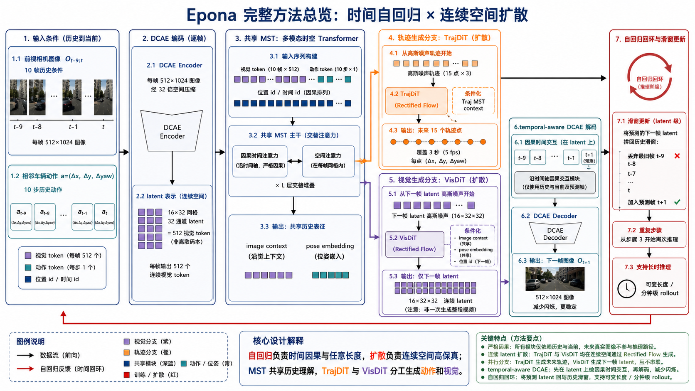
① 左侧每帧 512×1024 图像经 32 倍空间压缩得到 16×32 网格、32 通道 latent，即每帧 512 个视觉 token。② 动作不是高层命令，而是相邻帧的 Δx、Δy、Δyaw。③ MST 的输出被两个扩散头共享，但两个头并非串联：TrajDiT 在轨迹空间生成 15×3 连续量；VisDiT 在视觉 latent 空间生成 512×32 连续量。④ 推理时若使用自预测轨迹，代码只取 15 点轨迹的第一个点，转成动作 embedding 后条件化当前下一帧；这体现模型预测的是“滚动规划”，不是一次执行 3 秒开环计划。⑤ 红色回环表示预测 latent 进入下一轮历史，最老帧被丢弃，因此计算窗口固定、输出时长可变。
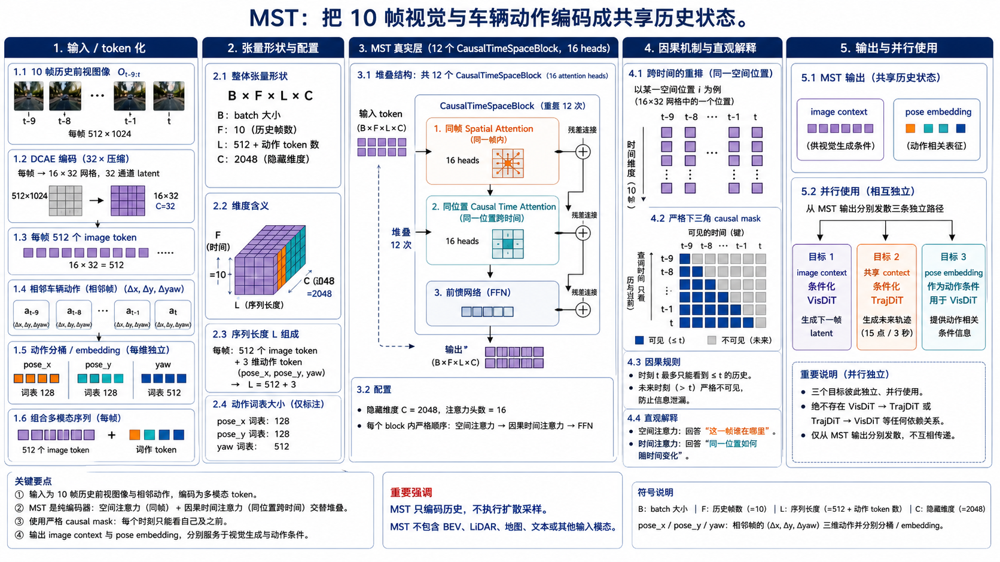
① SpatialTemporalTransformer 在 models/stt.py:283 初始化，默认配置 n_layer[0]=12、n_head=16、n_embd=2048。② 图像 latent 先经两层线性投影到 2048 维；pose_x、pose_y、yaw 分别从 512 维 embedding 投影到相同隐藏维度。③ CausalTimeSpaceBlock 通过张量重排，把“同一帧的所有空间 token”和“同一空间位置跨帧序列”分别送进空间注意力与时间注意力。④ 时间 mask 在 models/stt.py:353-356 由下三角矩阵生成，未来帧位置被置为 −∞，防止未来泄漏。⑤ 输出 stt_features 是两个 DiT 的共享条件；pose_emb 只直接传给视觉分支。MST 本身不从噪声采样，它是条件编码器。
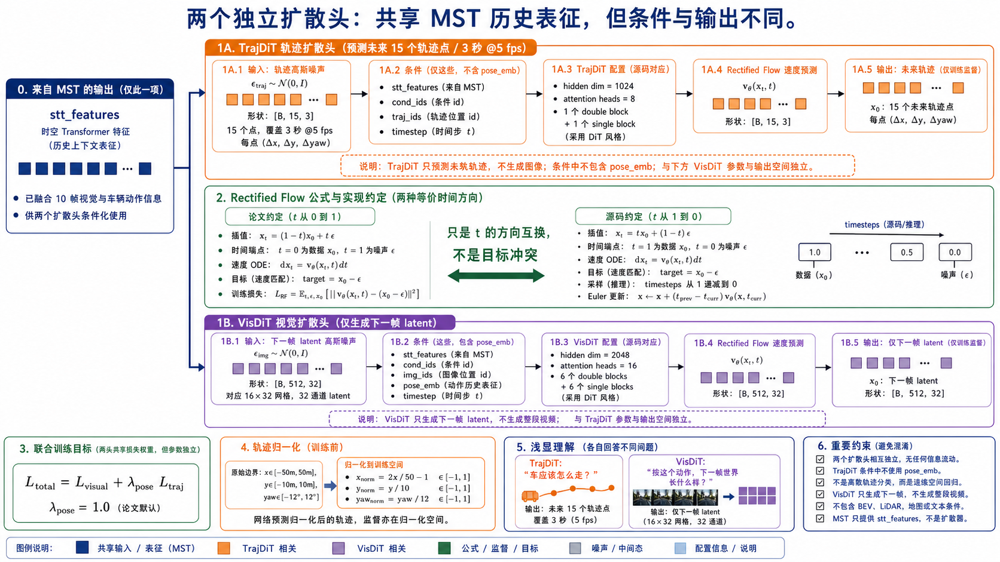
stt_features，但 TrajDiT 不接收 pose_emb；VisDiT 额外使用动作 embedding 来生成下一帧。① 轨迹目标由 get_rel_traj 构造为 [B,15,3]；x 被映射到 [−1,1]，y 除以 10，yaw 除以 12，避免三个物理量尺度差异支配 MSE。② TrajDiT.training_losses 的真实参数是 traj, traj_ids, cond, cond_ids, t，其中 cond=stt_features。③ FluxDiT.training_losses 额外接收 y=pose_emb，从而把当前动作调制进视觉生成。④ 两个模型都采用 FLUX 风格的 double-stream blocks 与 single-stream blocks：视觉头为 6+6、2048 hidden、16 heads；轨迹头为 1+1、1024 hidden、8 heads。⑤ 联合目标在 models/model.py:183 直接相加：loss_all=diff_loss+yaw_pose_loss，默认 λ=1.0。
| 维度 | TrajDiT | VisDiT |
|---|---|---|
| 输入噪声 | [B,15,3] | [B,512,32] |
| 共享条件 | stt_features、cond_ids | stt_features、cond_ids |
| 专属条件 | traj_ids | img_ids、pose_emb |
| 输出 | 未来 15 点相对轨迹 | 下一帧视觉 latent |
| 问题含义 | 车应该怎么走 | 按动作世界如何变化 |
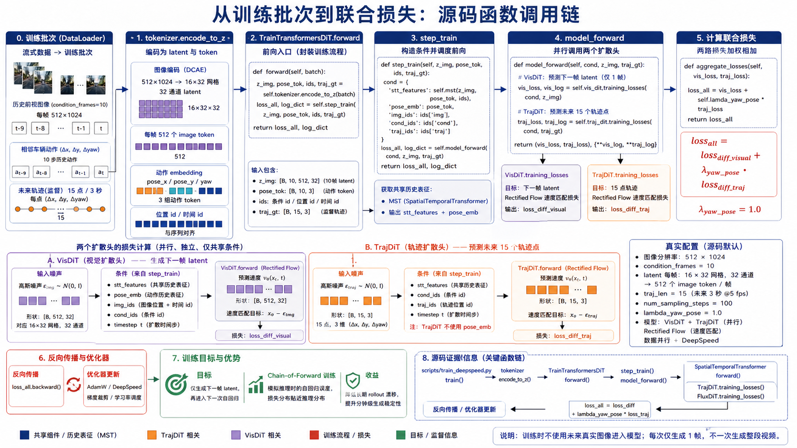
train_deepspeed.py、tokenizer、总模型、MST 和两个 DiT 的调用关系重构成一条可执行数据链。① scripts/train_deepspeed.py:143 的训练循环取得图像和车辆位姿批次。② VAETokenizer.encode_to_z 将图像送入 DCAE，并把二维 feature map patchify 成序列。③ TrainTransformersDiT.forward 在训练状态转入 step_train；后者把历史 latent 与目标下一 latent 组织给 model_forward。④ model_forward 先调用 MST，随后并行调用 TrajDiT.training_losses 与 FluxDiT.training_losses。⑤ 两条 loss 相加后才进入 DeepSpeed/优化器反向更新。图内短代码仅用于标识函数契约；真实证据位于 models/model.py:138-191、models/traj_dit.py:116-142、models/flux_dit.py:121-148。
这里的“联合”不是两个头互相喂输出，而是共享 MST 表征并共同反向塑造它。视觉任务迫使共享状态保留道路结构、动态物体和场景演化信息；轨迹任务迫使它保留与驾驶决策直接相关的运动信息。消融中关闭视频预测、只训练轨迹后规划性能下降，支持共享表征对规划有帮助，但这不能证明所有视觉细节都会自动变成因果驾驶知识。
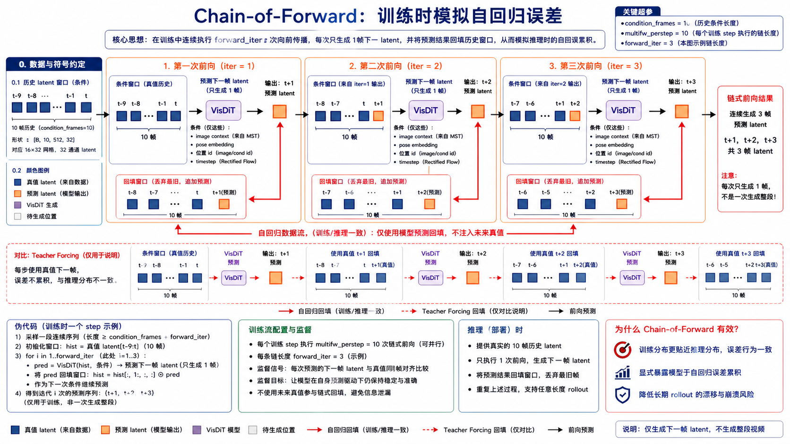
forward_iter=3，训练中连续执行三次“一帧预测—窗口回填”，使后续步骤在模型自己的预测分布上学习。① 第一次 forward 的历史窗口来自真实 latent；模型预测 t+1。② 第二次把预测 t+1 拼入窗口、丢弃最老帧，再预测 t+2；第三次同理。③ 因此它是“三次单帧 forward”，绝不是一个网络调用同时生成三帧。④ 传统 teacher forcing 总在干净真值历史上训练，推理却必须读取带误差的自预测历史，形成 exposure bias；Chain-of-Forward 让训练看到这种偏移。⑤ 配置 multifw_perstep=10 控制多步 forward 的执行节奏，避免每个优化 step 都承担完整额外开销。⑥ 该策略缓解而非消除漂移：若视觉错误改变了后续动作估计，错误仍会沿视觉—轨迹—视觉闭环放大。
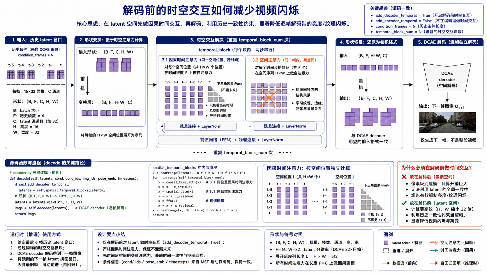
① DCAE.decode 在 models/modules/dcae.py:764 检测 add_decoder_temporal。② 张量从 (B·F,C,H,W) 重排为 (B,F,H·W,C)，使同一空间位置可以沿时间轴交互。③ spatial_temporal_blocks 为 F 帧构造下三角因果 mask；每个 block 先把张量变成 (B·L,F,C) 做因果时间注意力，再变回 (B·F,L,C) 做空间注意力。④ 处理后的 latent 再送入 DCAE decoder 恢复 512×1024 图像。⑤ 默认 NuPlan 配置为 add_encoder_temporal=False、add_decoder_temporal=True、temporal_patch_size=6。这意味着编码仍可逐帧复用，而解码端负责协调跨帧纹理与边缘，减少闪烁。
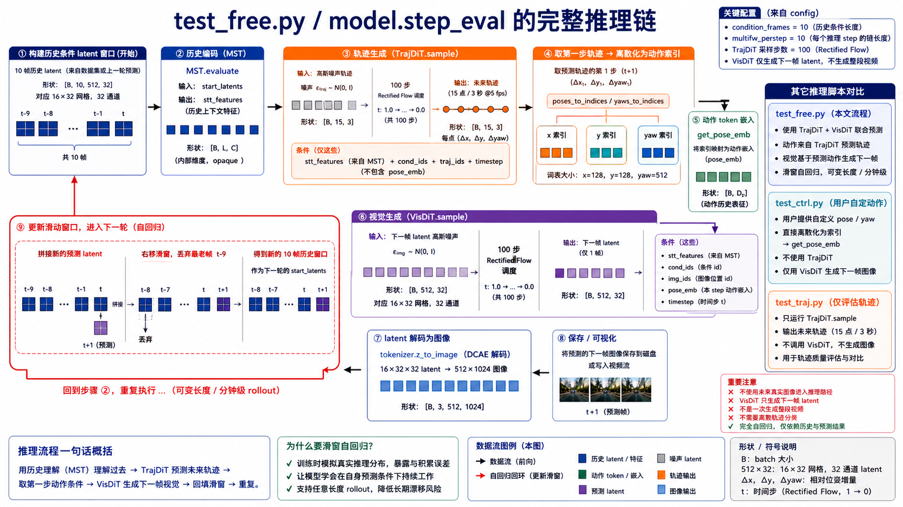
test_free.py 的完整闭环是 MST 理解历史→TrajDiT 规划→取第一步动作→VisDiT 生成下一 latent→DCAE 解码→滑窗回灌。① model.step_eval 先由 MST.evaluate 得到 stt_features, pose_emb。② TrajDiT 从高斯噪声开始，用 100 个 RF sampling steps 得到 15 点轨迹并反归一化。③ 当 self_pred_traj=True 时，代码只取 predict_traj[:,0:1]，经 poses_to_indices、yaws_to_indices 和 get_pose_emb 变成当前动作条件。④ VisDiT 从 [B,512,32] 噪声生成下一帧 latent。⑤ test_free.py 将该 latent 解码、保存，并执行 start_latents = cat(start_latents[:,1:], predict_latents)。⑥ test_ctrl.py 绕过 TrajDiT，使用用户给定 pose/yaw 控制视频；test_traj.py 只运行轨迹预测，不生成图像。这三种脚本证明同一模型可以切换自由 rollout、轨迹控制与纯规划评估。
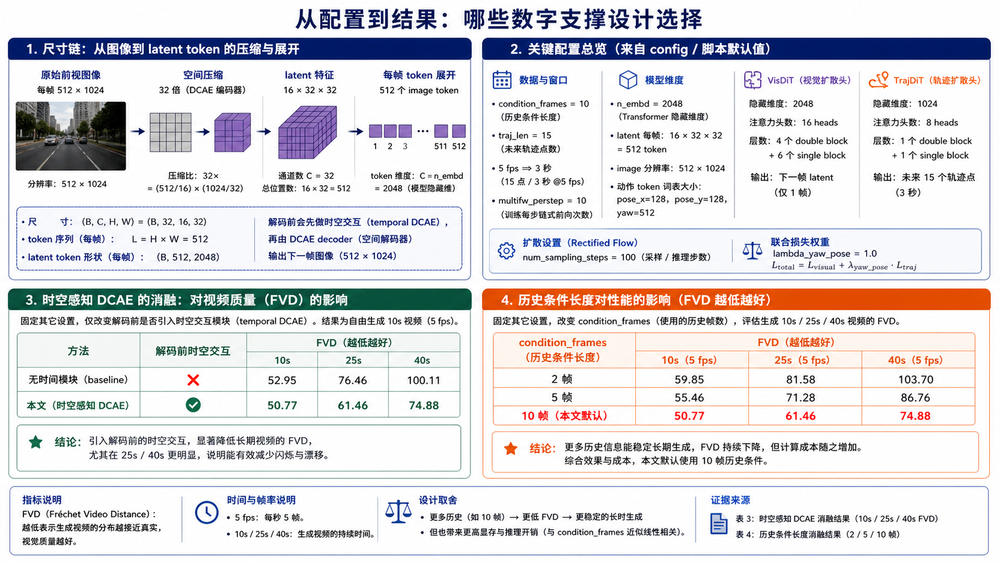
① 512×1024 经 32 倍压缩成为 16×32，每帧 512 个 token；这解释了为何下一帧扩散的序列长度仍可控。② 10 帧历史在 5 fps 下覆盖约 2 秒；15 点未来轨迹覆盖 3 秒。③ temporal-aware DCAE 在 NuPlan 上把 FVD40 从 100.11 降到 74.88，长窗口改善明显大于 FVD10 的 52.95→50.77，符合“跨帧一致性主要影响长时累计观感”的解释。④ 条件帧从 2→5→10 时 FVD40 为 103.70→86.76→74.88，更多历史有利，但论文也指出 10 帧已接近当前计算设置上限。FVD 越低越好，它衡量生成视频分布，不等价于碰撞率或规划安全性。
| 实验 | 指标 | 关键结果 | 可支持的结论 |
|---|---|---|---|
| Temporal DCAE | FVD10/25/40 | 50.77 / 61.46 / 74.88；无时间模块为 52.95 / 76.46 / 100.11 | 解码前跨帧交互显著改善中长时视觉一致性 |
| 历史长度 | FVD40 | 2帧 103.70；5帧 86.76；10帧 74.88 | 更长历史帮助理解运动趋势，但增加序列计算 |
| NuScenes 规划 | 平均 L2 / 碰撞率 | 1.25 m / 0.36% | 共享世界模型表征可服务端到端规划 |
| NAVSIM | PDMS | 86.2 | 规划分支具有竞争力；不可与 FVD 横向比较 |
论文通过“关闭视频预测、仅训练轨迹”的消融观察到规划性能下降。机制上，单纯轨迹监督只要求模型拟合有限维动作目标；视觉预测则要求共享状态解释车道几何、前车运动、遮挡变化、交通灯和相机运动。于是 MST 不能只保留与当前轨迹标签相关的短捷径，而需要更完整的可预测状态。TrajDiT 从这个状态中受益。不过该证据仍是关联性的：若要进一步证明因果来源，需要控制模型容量、视觉 loss 权重和训练样本量，并分析哪些视觉因素真正改善了规划。
| 机制 | 源码入口 | 实现要点 | 正文/图 |
|---|---|---|---|
| DCAE token 化 | models/modules/tokenizer.py:63-96 | encode、patchify、decode；32×空间压缩 | 图 E-1/E-8 |
| MST | models/stt.py:283-504 | 视觉/动作投影、12 个 CausalTimeSpaceBlock、因果时间 mask | 图 E-2 |
| 训练总控 | models/model.py:138-218 | 构造轨迹目标、调用双 DiT、联合 loss | 图 E-4 |
| TrajDiT | models/traj_dit.py:34-160 | 轨迹 RF 训练和 Euler 采样 | 图 E-3/E-7 |
| VisDiT | models/flux_dit.py:38-168 | 视觉 latent RF；额外接收 pose_emb | 图 E-3/E-7 |
| Chain-of-Forward | models/model.py:193-218 与训练循环 | 多次单帧预测并回灌自预测 latent | 图 E-5 |
| Temporal DCAE | models/modules/dcae.py:733-770 | latent 上因果时间注意力→空间注意力→decoder | 图 E-6 |
| 自由 rollout | scripts/test/test_free.py:63-135models/model.py:225-264 | 预测轨迹第一步、生成一帧、滑窗更新 | 图 E-7 |
视觉误差改变历史表征，历史表征影响轨迹，轨迹再条件化视觉。Chain-of-Forward 只让模型适应有限步自预测历史，不能保证无限长稳定。
源码主链没有 BEV、LiDAR 或高精地图。前视遮挡、侧后方交通参与者和不可见区域只能从数据先验推断。
FVD 改善证明视觉分布更接近真实视频，但不直接证明风险识别、闭环安全或罕见场景鲁棒性。
每个视频帧都需约 100 次 RF 更新；固定窗口让显存可控，但总推理时间仍随输出帧数线性增长。
来源与核验：论文 TeX：epona/sources/tex_current_task/sec/method.tex、exp.tex、supp.tex；官方仓库本地副本：epona/repo/Epona-main；本次源码证据与行号摘录：epona/current_task_20260901/evidence/；8 张图的原始路径、生成时间、尺寸与 SHA-256：epona/current_task_20260901/image_manifest.tsv 和 figure_decode_manifest.json。